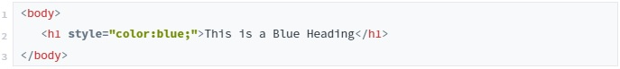
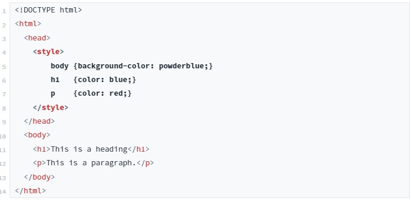
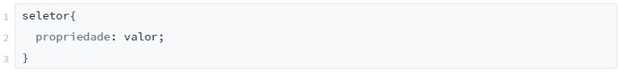
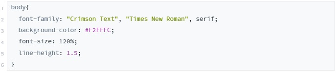

Aprimorando Layout
Estilos de CSS
O CSS pode ser adicionado ao seu HTML de 3 maneiras:
-
Inline: usando o atributo style em elementos HTML;
Aplica um estilo exclusivo a um único elemento HTML.

-
Interno: declarando na mesma página, usando um style no elemento head;
Define um estilo para uma única página HTML.

-
Externo: usando um arquivo CSS externo;
Define o estilo de muitas páginas HTML.
Com uma folha de estilo externa, você pode alterar a aparência de um site inteiro, alterando um arquivo!😎
Para usar uma folha de estilos externa, adicione um link a ela na seção head da página HTML:

Sintaxe do CSS
É o padrão de como o seu código deve ser escrito.
Nesse padrão temos:
- Seletor: é a tag do html ao qual se quer aplicar algum estilo.
- Propriedade: é a regra que será aplicado ao seletor.
- Valor: é a característica que o seletor irá assumir.
Confira o exemplo a seguir:
